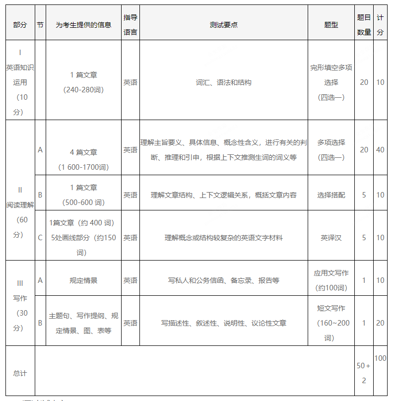

[toc]
全国硕士研究生招生考试英语(一)考试大纲(非英语专业)(2022年版)
I. 考试性质
英语(一)考试是为高等学校和科研院所招收硕士研究生而设置的具有选拔性质的全国统一入学考试科目，其目的是科学、公平、有效地测试考生对英语语言的运用能力，评价的标准是高等学校非英语专业本科毕业生所能达到的及格或及格以上水平，以保证被录取者具有一定的英语水平，并有利于各高等学校和科研院所在专业上择优选拔。
II. 考查目标
考生应掌握下列语言知识和技能：
(一)语言知识
- 语法知识
考生应能熟练地运用基本的语法知识。
本大纲没有专门列出对语法知识的具体要求，其目的是鼓励考生用听、说、读、写的实践代替单纯的语法知识学习，以求考生在交际中能更准确、自如地运用语法知识。
- 词汇
考生应能掌握5500左右的词汇以及相关附表中的内容(详见附录1、2)。
除掌握词汇的基本含义外，考生还应掌握词汇之间的词义关系，如同义词、近义词、反义词等;掌握词汇之间的搭配关系，如动词与介词、形容词与介词、形容词与名词等;掌握词汇生成的基本知识，如词源、词根、词缀等。
英语语言的演化是一个世界范围内的动态发展过程，它受到科技发展和社会进步的影响。这意味着需要对本大纲词汇表不断进行研究和定期的修订。
此外，全国硕士研究生入学英语统一考试是为非英语专业考生设置的。考虑到交际的需要，考生还应自行掌握与本人工作或专业相关的词汇，以及涉及个人好恶、生活习惯和宗教信仰等方面的词汇。
(二)语言技能
- 阅读
考生应能读懂选自各类书籍和报刊的不同类型的文字材料(生词量不超过所读材料总词汇量的3%)，还应能读懂与本人学习或工作有关的文献资料、技术说明和产品介绍等。对所选材料，考生应能：
1)理解主旨要义;
2)理解文中的具体信息;
3)理解文中的概念性含义;
4)进行有关的判断、推理和引申;
5)根据上下文推测生词的词义;
6)理解文章的总体结构以及上下文之间的关系;
7)理解作者的意图、观点或态度;
8)理解文章的论证方法，比较不同观点。
- 写作
考生应能写不同类型的应用文，包括私人和公务信函、备忘录、报告等，以及一般描述性、叙述性、说明性或议论性的文章。写作时，考生应能：
1)做到语法、拼写、标点正确，用词恰当;
2)遵循文章的特定文体格式;
3)合理组织文章结构，使其内容统一、连贯;
4)根据写作目的和特定作者，恰当选用语域。
III. 考试形式与试卷结构
(一)考试形式
考试形式为笔试。考试时间为180分钟。满分为100分。
试卷包括试题册和1张答题卡。考生应将145题的答案按要求涂写在答题卡相应题号的选项上，将4652题的答案书写在答题卡指定位置的边框区域内。
(二)试卷结构

(三)考试内容
试题分四部分，共48题，包括英语知识运用、阅读理解、翻译和写作。
第一部分 英语知识运用
该部分不仅考查考生对不同语境中规范的语言要素(包括词汇、表达方式和结构)的掌握程度，而且还考查考生使用恰当的衔接手段建构连贯语篇的能力。共20小题，每小题0. 5分，共10分。
在一篇240~280词的文章中留出20个空白，要求考生从每题给出的4个选项中选出最佳答案，使补全后的文章意思通顺、前后连贯、结构完整。
第二部分 阅读理解
该部分由A、B、C三节组成，考查考生理解书面英语的能力。共30小题，每小题2分，共60分。
A节(20小题)：主要考查考生理解主旨要义、具体信息、概念性含义，进行有关的判断、推理和引申，根据上下文推测生词的词义等能力。要求考生根据所提供的4篇(总长度为1600~1700词)文章的内容，从每题所给出的4个选项中选出最佳答案。
B节(5小题)：主要考查考生理解文章结构、上下文逻辑关系以及概括文章内容的能力。本部分有3种备选题型。每次考试从这3种备选题型中选择一种进行考查。
备选题型有：
1)本部分的内容是一篇总长度为500600词的文章，其中有5段空白，文章后有67段文字。要求考生根据文章内容从这6~7段文字中选择能分别放进文章中5个空白处的5段。
2)在一篇长度为500600词的文章中，各段落的原有顺序已被打乱。要求考生根据文章的内容和结构将所列段落(78个)重新排序，其中有2~3个段落在文章中的位置已经给出。
3)在一篇长度约500词的文章前或后有67段文字或67个概括句或小标题。这些文字或标题分别是对文章中某一部分的概括、阐述或举例。要求考生根据文章内容，从这6~7个选项中选出最恰当的5段文字或5个标题填入文章的空白处。
C节(5小题)：主要考查考生准确理解概念或结构较复杂的英语文字材料的能力。要求考生阅读一篇约400词的文章，并将其中5个画线部分(约150词)译成汉语，要求译文准确、完整、通顺。
第三部分 写作
该部分由A、B两节组成，主要考查考生的书面表达能力。共30分。
A节：考生根据所给情景写出约100词(标点符号不计算在内)的应用性短文，包括私人和公务信函、备忘录、报告等。共10分。
B节：考生根据提示信息写出一篇160~200词的短文(标点符号不计算在内)。提示信息的形式有主题句、写作提纲、规定情景、图、表等。共20分。
考生应能掌握的语言技能包括听、说、读、写四种能力。但是由于听力能力和口语能力的考查在复试中进行，因此这里只列出读和写两种技能。
指在书面和口语表达中根据不同的交际对象，所采用的话语方式，即正式、一般、非正式的话语。
硕士研究生入学考试将英译汉试题作为阅读理解的一部分，其目的是测试考生根据上下文准确理解概念或复杂结构并用汉语正确予以表达的能力。